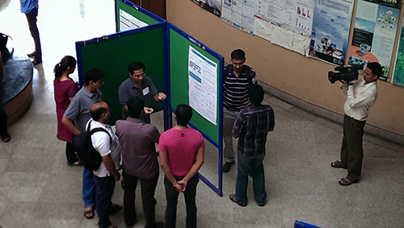
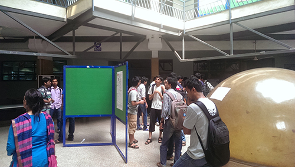
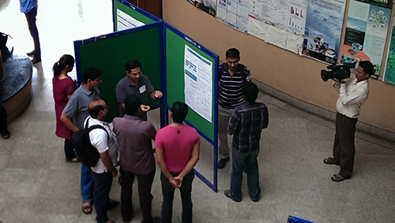
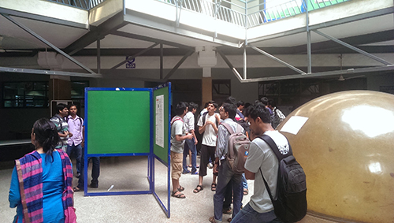

Poster Mela 2015
Research scholars are the primary driving force behind our research program.
The mela will showcase research work being done by research scholars of the
Dept. of Computer Science and Engineering at IIT Bombay through poster sessions
and short presentations. In addition, there will be invited talk by eminent
Computer Science researcher.
To know more about ongoing research in the Dept. of Computer Science & Engineering
at IIT Bombay, do attend this event. The posters will be on display throughout the
day on 21st March. Stop by whenever you find it convenient. Research scholars will
be available to explain their work during designated slots, as listed in the schedule.
Schedule
Venue (talk): Lecture Hall, B Block, 02nd/03rd Floors, Kanwal Rekhi Building
Venue (posters): Kanwal Rekhi Building, 1st and 2nd floors
Saturday, 21 March
| 10:00 |
Poster session starts |
| 11:00 |
Talk by Dr. Nishant Sinha |
| 12:00 |
Poster session resumes |
| 13:00 |
Lunch |
| 14:00 |
Talk by Dr. Sengupta |
| 15:00 |
Poster session resumes |
Invited Talk
Web *.o: Simplifying Web Programming
By: Dr. Nishant Sinha
Time: Saturday, 21st Mar, 10:00
Venue: Lecture Hall, B Block
Abstract:
Programming modern, interactive web apps is hard owing to multiple challenges: gluing together multiple mismatched web technologies, ubiquity of dynamically typed languages, heterogeneous mobile platforms and rapid evolution of frameworks and tools. In this talk, I will discuss a set of core programming abstractions which can help drastically simplify modern web programming, thus allowing the developer to focus on the core app design. Time permitting, I will also overview a few other emerging areas of PL/systems research.
Bio:
Nishant Sinha is a Researcher in the Cognitive Solutions and Services department at IBM Research, India. His interests lie in building reliable, distributed and interactive software systems. He obtained his Ph.D. and M.S. in Computer Engineering from Carnegie Mellon University, and B.Tech. in Computer Sc. and Engg. from IIT Kharagpur. Before joining IBM Research, he was a Research Staff Member in the System Analysis and Verification group at NEC Labs, Princeton, where he developed automated verification tools for software.
 


